Initial NSDC Analysis - Updated
Greg Lane and Erin Kelley
January 19, 2018
Distribution of Test Scores
A candidates final score is comprised of a score on a theory section and one on a practical section which are added together. In order to receive a certificate from a training institude, students enrolled in a program for a “Level 3” job (generally less skilled) must receive 50% of the total points, while those enrolled in a “Level 4” training require 70%. Below we plot the total score, the practical score, and the theory score for trainees in the Beauty Salon Program (Level 3). In each graph we plot the scores for the certified versus non-certified students. The certification threshold is clearly visible on the graph depicting total scores.
 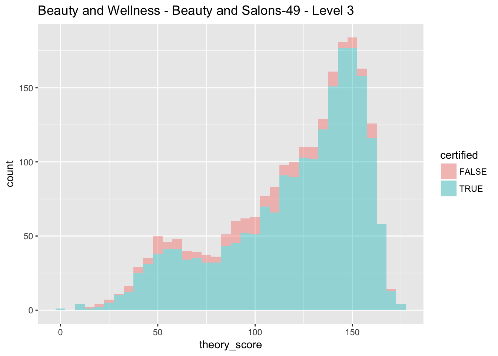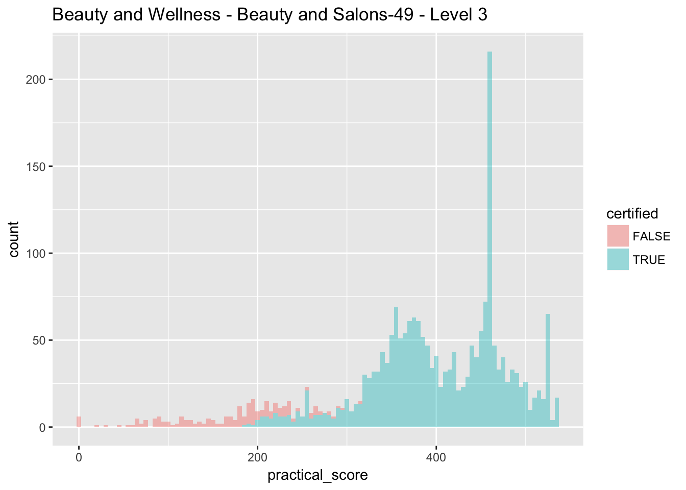
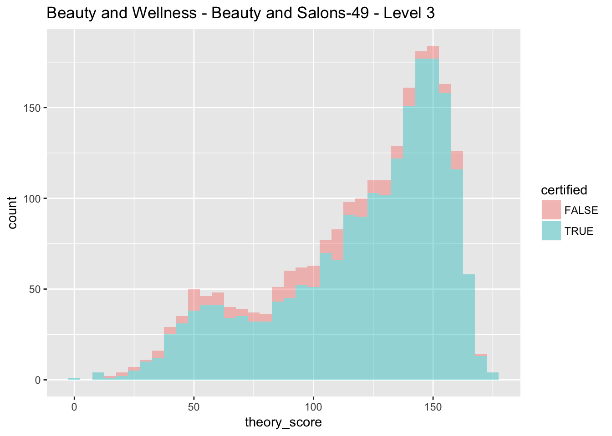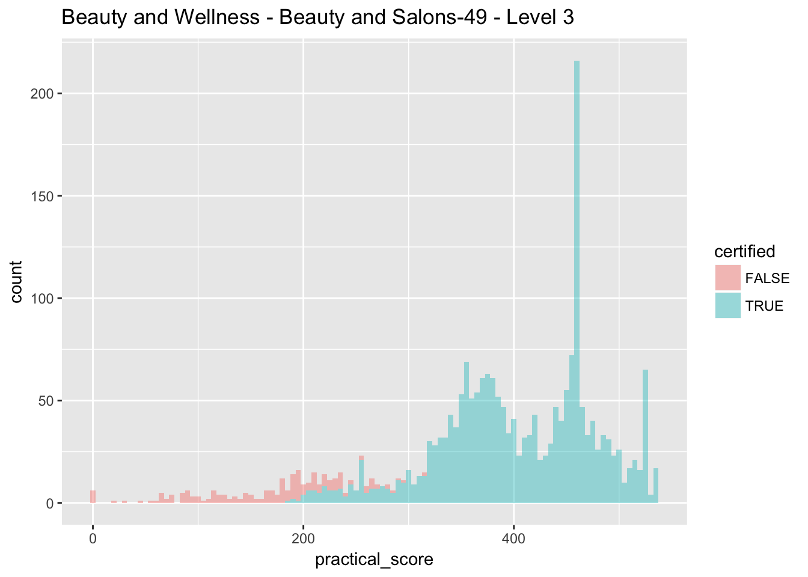
A primary concern that we have that would violate the RD assumption is that testing agencies are manipulating scores (exacerbated by the fact that part of the payment from the NSDC is tied to the number of trainees that achieve certification). One indication that this might be happening is the large spike in the distribution of scores in the practical score section. However, there are some institutional facts that suggest this may not be causing problems in the RD.
Specifically, the theory section of the exam is conducted on a tablet with fixed questions and is automatically graded by a computer. The score on the theory section is not immediately reported to the trainee or testing agency. The practical exam is conducted and graded by the trainer and the score is inputted into the computer system. At that point, the theory and practical score are added together by the system to produce a total score. The trainee and training center are both informed about the overall results, including certification status.
In this framework it would be particularly difficult for the testing agency to adjust the practical test scores such that trainees were able to pass the threshold for certification. They would have to know which students were going to fall just below and attribute them an additional few points on the practical section, which is unrealistic. Moreover, manipulation in this context would have to take the form of providing the students they favor with a great score on the practical section, which would simply shift the distribution of total scores to the right, leaving it smooth around the threshold, and satisfying the RD conditions. Finally, we were informed that you would expect the spikes you see in some of the score distributions because the exams are naturally modal (e.g. 10% of the exam is quite difficult while the other 90% is rather easy) and this isn’t necessarily an indication of manipulation.
Note, there are some sectors where these justifications are less robust because the practical score makes up a very large percentage of the total score. In these cases a trainer could be nearly 100% certain that trainee will pass if they acheive a certain mark on the practical section. Therefore, they could simply take all the students right below the threshold and move them up. A possible example of this is paramedic training which is highly weighted towards the practical test.
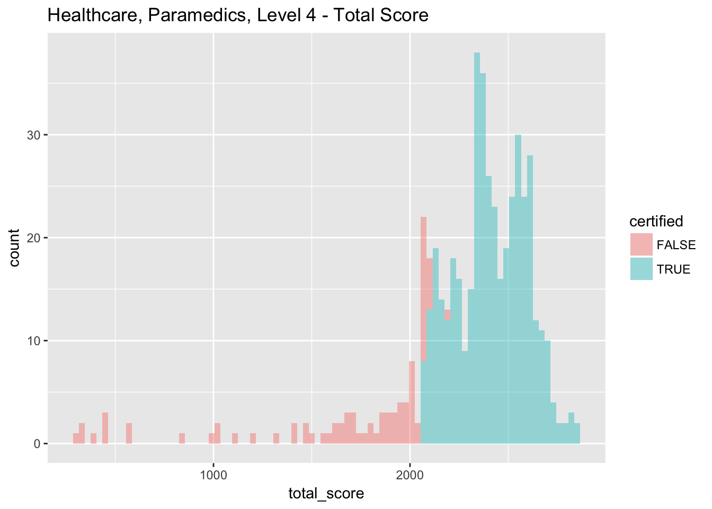 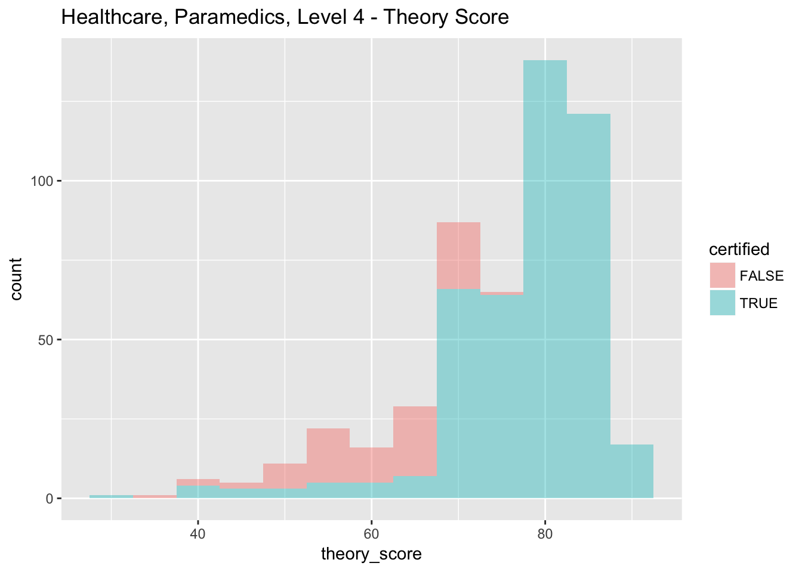
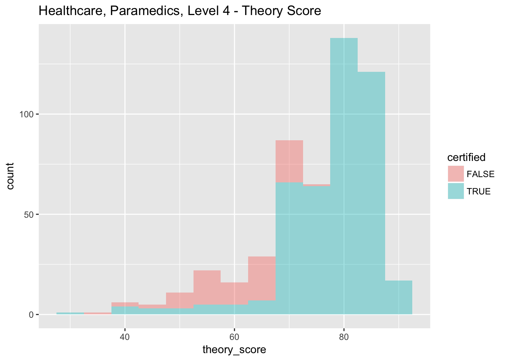
We therefore restrict our analysis to sectors where the total score is not disproportionately determined by the practical scores. These sectors are IT, Telecom, Beauty, Tourism, Retail which together make up about half the sample. Next, we take a first pass at running the RD to see if being certified leads to increased employment and wages. (Note the data we were provided does not provide the total number of possible points on the exam, and so we need to infer the value of the threshold by looking at the minimum score that was attributed a certificate in the data. It looks like over time the minimum requirement may have changed which means this will be a fuzzy RD). The full sample distribution of test scores looks good across the threshold:
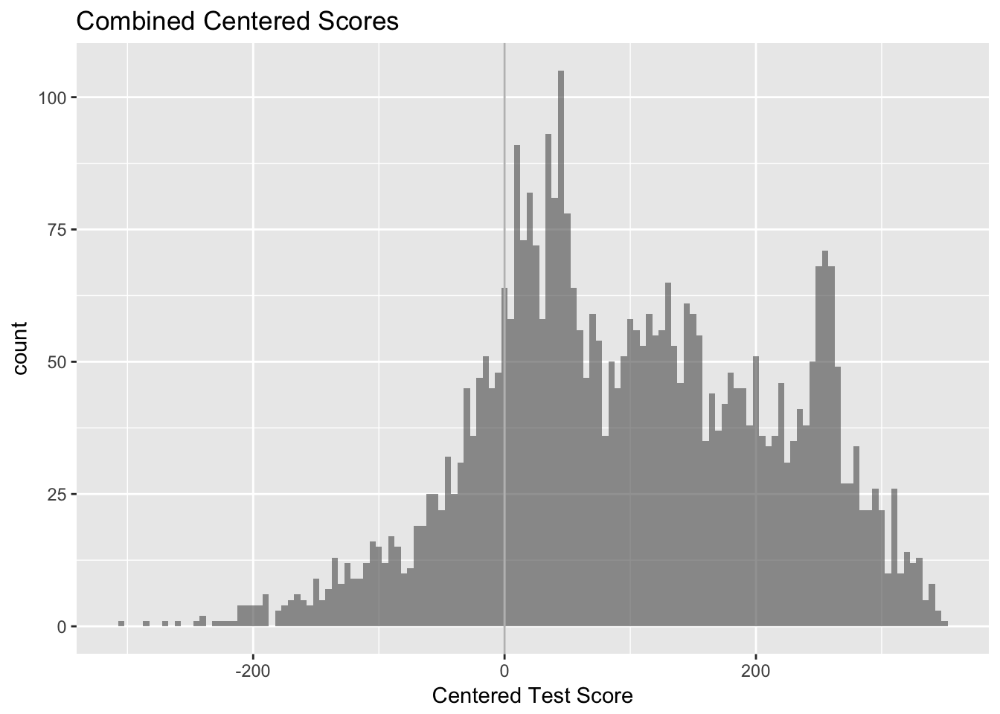
Outcome Data and RD
There are two outcomes of interest for which we have data from the NSDC: 1) The probability of being employed within one month of the program’s end and 2) reported monthly income conditional on employment. These data are collected by the training centers themselves, and part of their compensation is tied to the number of trainees they place in jobs within two months of the end of training. The NSDC tries to ensure these jobs are real by requiring that pay stubs be submitted before the center is rewarded for the job placement. However, there is ancetodal evidence that these jobs tend to last for a very short time period and so any results will likely reflect a very short run outcome rather than sustained gains from becoming certified.
Below are two graphs that visually represent the RD on these two outcomes. Visually, there appears to be positive increases both in the probability of being employed and in the monthly wages earned by trainees at the certification threshold. The third graph shows smoothness in reported years of education across the threshold (education is the only observable we have on trainees).
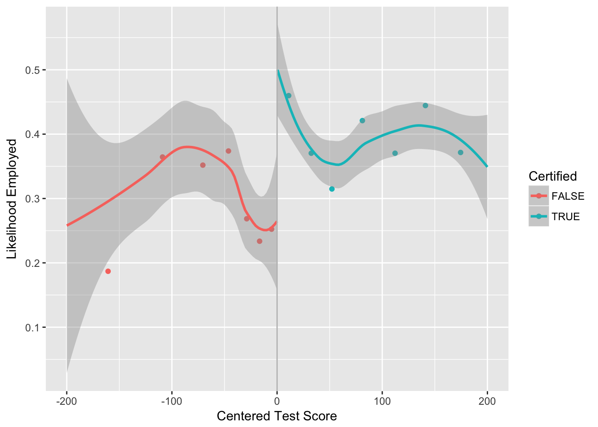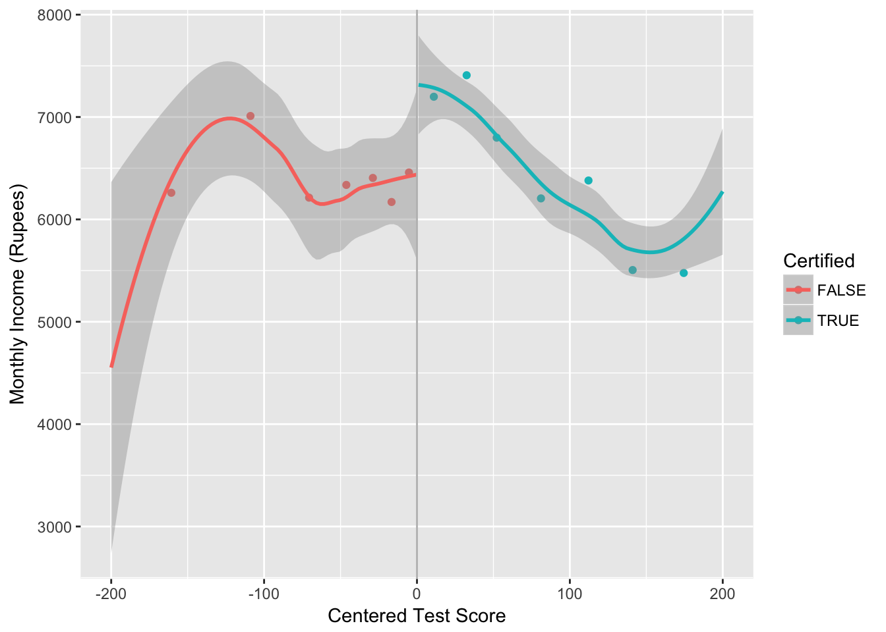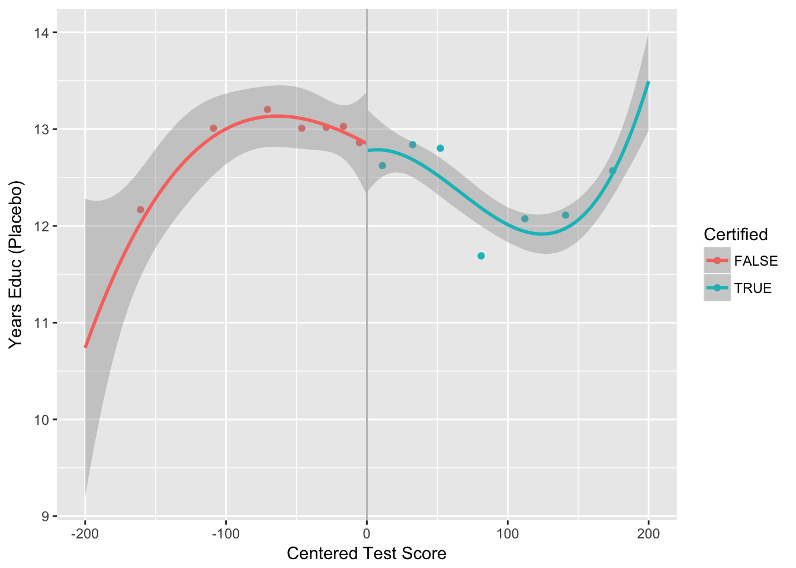
Regressions
We can also run this analysis via regression (no attempt at bandwidth yet):
rd_data %<>% mutate(above = as.numeric(above), placement = as.numeric(placement)) %>%
rename(above_threshold = above, test_score = running, test_X_above = above_run )
#simple rd regs
felm(placement ~ above_threshold + test_score + test_X_above |
subsectorid + trainer_id | 0 | center_id, data = rd_data) %>%
summary()##
## Call:
## felm(formula = placement ~ above_threshold + test_score + test_X_above | subsectorid + trainer_id | 0 | center_id, data = rd_data)
##
## Residuals:
## Min 1Q Median 3Q Max
## -0.98087 -0.25582 -0.03302 0.27806 0.97043
##
## Coefficients:
## Estimate Cluster s.e. t value Pr(>|t|)
## above_threshold 0.2234347 0.0742223 3.010 0.00263 **
## test_score 0.0003537 0.0002101 1.683 0.09239 .
## test_X_above -0.0001489 0.0002821 -0.528 0.59753
## ---
## Signif. codes: 0 '***' 0.001 '**' 0.01 '*' 0.05 '.' 0.1 ' ' 1
##
## Residual standard error: 0.3685 on 4201 degrees of freedom
## Multiple R-squared(full model): 0.3971 Adjusted R-squared: 0.3814
## Multiple R-squared(proj model): 0.09086 Adjusted R-squared: 0.06727
## F-statistic(full model, *iid*):25.38 on 109 and 4201 DF, p-value: < 2.2e-16
## F-statistic(proj model): 15.54 on 3 and 49 DF, p-value: 3.106e-07felm(monthlyincome ~ above_threshold + test_score + test_X_above |
subsectorid + trainer_id | 0 | center_id, data = rd_data) %>%
summary()##
## Call:
## felm(formula = monthlyincome ~ above_threshold + test_score + test_X_above | subsectorid + trainer_id | 0 | center_id, data = rd_data)
##
## Residuals:
## Min 1Q Median 3Q Max
## -4172.1 -681.4 -128.1 394.7 8712.5
##
## Coefficients:
## Estimate Cluster s.e. t value Pr(>|t|)
## above_threshold 451.1255 127.1248 3.549 0.000401 ***
## test_score 0.0063 0.7727 0.008 0.993496
## test_X_above -0.0271 1.1273 -0.024 0.980824
## ---
## Signif. codes: 0 '***' 0.001 '**' 0.01 '*' 0.05 '.' 0.1 ' ' 1
##
## Residual standard error: 1502 on 1312 degrees of freedom
## (2910 observations deleted due to missingness)
## Multiple R-squared(full model): 0.5693 Adjusted R-squared: 0.5404
## Multiple R-squared(proj model): 0.007578 Adjusted R-squared: -0.05899
## F-statistic(full model, *iid*):19.71 on 88 and 1312 DF, p-value: < 2.2e-16
## F-statistic(proj model): 6.062 on 3 and 43 DF, p-value: 0.00155The points estimates above show being certified increases the probability of being employed by 22 percentage points and increases monthly income (conditional on being employed) by 450 rupees.
Summary and Ideas Moving Forward
In general, I think the identification strategy is okay. The particulars of the certification process would make it hard to manipulate the score to the precision necessary to mess up the RD. However, the outcomes we can currently measure are not probably the outcomes we care most about in evaluating the program.
Therefore, we can try and get more data on medium run outcomes by:
Asking NSDC if they would be willing to collect this data themselves. Could take a long time, but wouldn’t require asking for grant money.
Collect data ourselves using exisiting database of phone numbers. Problems are that a) this will cost money (although likely not a ton), and b) the quality of the contact numbers isn’t great.
Partner more closely with certain well run training centers and collect good contact information, demographics, and then follow-up. This would require more money and time (and would probably have a smaller overall sample)
We can also think about other ideas that we can examine with this data beyond just program evaluation. Just brainstorming:
Is there a difference between “practical” skills and “theoretical” skills in predicting job retention and wage? Does this vary across different sectors as we might expect? This might suggest that providing sub-scores is important
Value of certificate in different sectors? For some industries, a certificate might just be a signal of quality in terms of productivity to the employer. However, in some other setors (beauty), a certificate might also function as a measure of quality to the customer. Would be interesting to see if having a certificate was more important in these industries (controling for skill) than others.
Examine selection into different trainings (there appears to be overall negative correlation between education and test score). If you are selecting the low performers of the educated crowd and the all-stars of the uneducated crowd could have interesting implications for signalling / hiring.
Examine performance at different training centers: are certain training centers are more effective than others?
Can we collect a more diverse set of outcomes? It may be that certification has no long run labor effects but helps women’s empowerment for example.
Any intention to do random audits?
If we can get a breakdown of the scores on various subcomponents of the test, we could see if employers value certain skills over others and therefore retain people longer? The breakdown of the theory section should be available through testing companies like AM, and if subscores are being entered for practical section there may be a way to get that data.